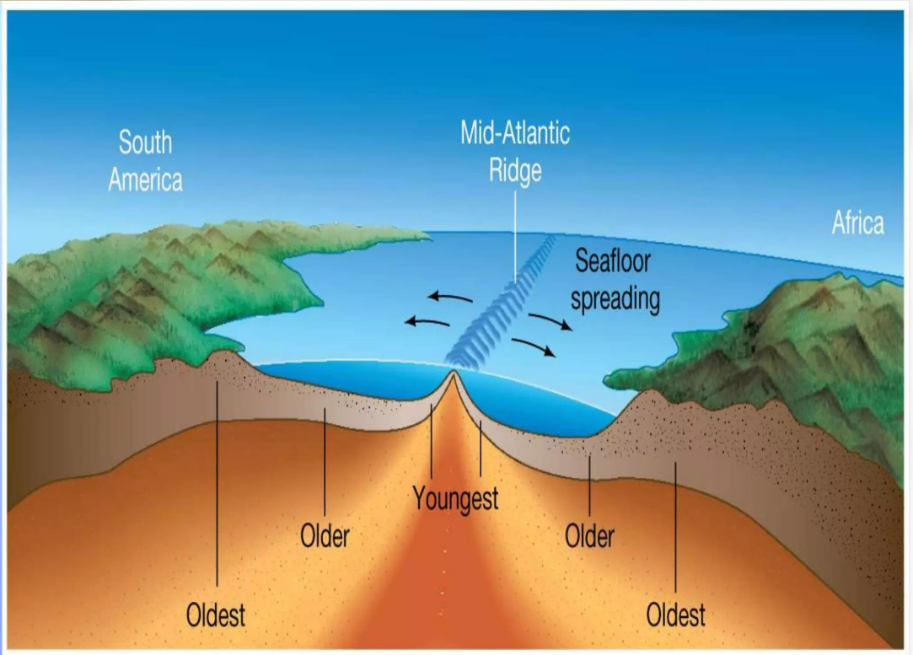

El fondo oceánico es una superficie geológica en constante transformación.
El océano y el movimiento de las placas
Bajo la superficie de los océanos existe un relieve dinámico. Las placas tectónicas crean nueva corteza, desplazan el fondo marino y reciclan parte de sus materiales en el interior de la Tierra.
La expansión del fondo oceánico
En las dorsales oceánicas, dos placas se separan y el material caliente del interior terrestre asciende. Al enfriarse, este material forma nueva corteza oceánica, compuesta principalmente por rocas basálticas.
A medida que se genera nueva corteza, el fondo marino se desplaza hacia ambos lados de la dorsal. Este proceso se conoce como expansión del fondo oceánico y constituye una de las evidencias fundamentales de la tectónica de placas.
Ejemplo: la dorsal mesoatlántica recorre el océano Atlántico y contribuye a separar las placas que sostienen América de las que sostienen Europa y África.
La edad del fondo marino
La edad de las rocas del fondo oceánico permite estudiar cómo se han desplazado las placas a lo largo del tiempo. En general, las rocas más jóvenes se encuentran cerca de las dorsales, donde se forma nueva corteza.
Al alejarse de la dorsal, la corteza suele ser progresivamente más antigua. Este patrón, junto con las bandas magnéticas registradas en las rocas, aporta evidencia de la expansión del fondo oceánico.
Dato geológico: gran parte del fondo oceánico actual tiene menos de 200 millones de años, mientras que algunos continentes conservan rocas de más de 3.000 millones de años.
La desaparición de la corteza oceánica
La corteza oceánica no permanece intacta para siempre. En determinadas zonas, una placa oceánica se hunde bajo otra placa y desciende hacia el manto terrestre. Este proceso recibe el nombre de subducción.
Durante su descenso, la placa libera agua y otros materiales que favorecen la formación de magma en el manto situado encima. La subducción está relacionada con la formación de fosas oceánicas, terremotos y numerosos sistemas volcánicos.
Ejemplo: en el océano Pacífico, numerosas zonas de subducción forman parte del sistema conocido como cinturón de fuego del Pacífico.
Los océanos a través del tiempo
La posición de los continentes y el tamaño de los océanos cambian a lo largo de millones de años. Cuando las placas se separan, pueden abrirse nuevas cuencas oceánicas. Cuando convergen, algunos océanos se reducen y pueden llegar a desaparecer.
En el pasado, los continentes formaron grandes masas terrestres, como Pangea. Su fragmentación dio lugar a la configuración de océanos y continentes que conocemos hoy, aunque el planeta continúa cambiando.
El océano Atlántico es un ejemplo de una cuenca que se ha expandido desde la fragmentación de Pangea. En otras regiones, como partes del océano Pacífico, la subducción consume corteza oceánica y modifica progresivamente la extensión de la cuenca.
Un fondo marino en transformación
Los océanos no son estructuras inmóviles. La formación de corteza en las dorsales, su desplazamiento y su reciclaje mediante la subducción forman parte de un sistema geológico que modifica la superficie terrestre durante millones de años.